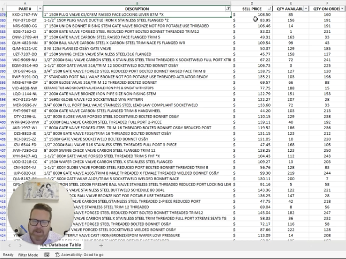
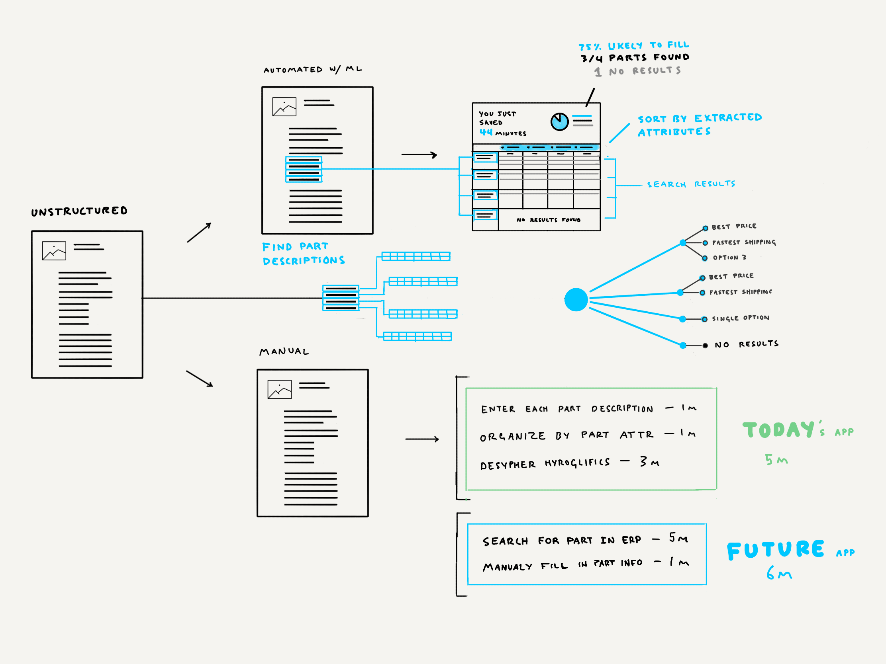
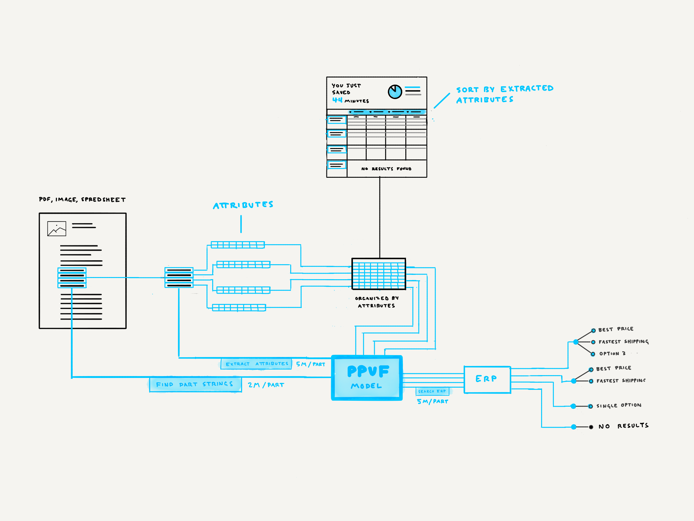

Starting with business problems
Industrial Data Labs aimed to address a critical challenge: reducing the time it took for sales reps to respond to RFQs without sacrificing accuracy. By leveraging data and implementing machine learning, they sought to automate key steps, streamline workflows, and enhance productivity.
Mapping Existing Workflows
Industrial Data Labs began by conducting a detailed assessment of the current workflow for responding to RFQs. This included observing the entire process from receiving a proposal to sending a quote, identifying manual steps, and noting bottlenecks. By mapping the existing workflows, they gained a clear understanding of areas where time and resources were being underutilized.
Quantify Potential Time Savings
The team then developed and tested new workflows incorporating the trained model to automatically fill in quote details and suggest responses. Early prototypes indicated a potential reduction in response time by up to 80%, enabling inside sales reps to focus more on high-priority tasks and relationship management.
Create a Proof of Concept
A proof of concept was created using a limited set of RFQs to demonstrate the effectiveness of the new system. The prototype integrated seamlessly into the existing sales platform and was able to handle a diverse set of RFQs, showing a significant reduction in time spent on repetitive tasks.

Product Screens
Results
By reengineering the RFQ response workflow, leveraging existing data, and implementing a machine learning model, Industrial Data Labs significantly reduced the time spent responding to RFQs. The automated system not only improved response efficiency but also empowered sales reps to focus on strategic tasks.